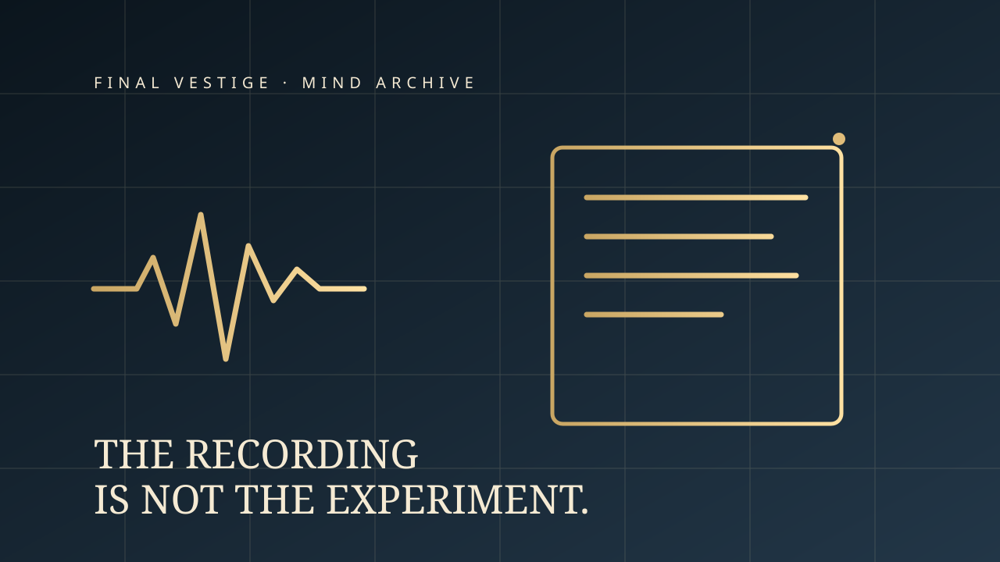

Tools under review / Zen12 / Source-first buyer decision
Twelve minutes of listening. What would it actually change?
The case for an audio routine is not the same as a claim that the audio rewires your attention. Here is how to decide without borrowing certainty from unrelated studies.
Optional, planned short film · 42 seconds
What the label cannot show

Read the full 42-second narration / scene guide
- 00–07: A pair of headphones on a desk; caption “A recording is a format.” Narration: “An audio recording can give you a ritual. But a format is not an experiment.”
- 07–14: Two equal columns, audio and comparison. Narration: “To test a claim, ask what happened to listeners—and what happened in the comparison group.”
- 14–21: Notebook with two headings: felt / measured. Narration: “Feeling quieter matters. It is not the same thing as making fewer mistakes.”
- 21–28: Abstract history folio, no reproduced historical images. Narration: “An old signed account can tell us what someone reported, without proving the cause.”
- 28–35: Twelve-minute timer beside a blank task card. Narration: “Try twelve minutes, record what you did, and keep the unanswered question.”
- 35–42: Final Vestige source rule / open journal. Narration: “Then read the evidence before you consider buying the sound.”
Proposed caption file: ZEN12_R423_42S.vtt. All words remain available without JavaScript or media loading. Any future playback requires consent-aware, original compressed media and human caption-sync QA.
Start with the problem, not a promise
You want a small listening ritual you can actually fit into a day. But a product page is not an experiment, and feeling quieter is not automatically proof that a recording changed concentration. The first useful decision is whether you want a structured routine or an independently demonstrated change in performance. Those are different purchases.
Final Vestige's historical Puységur files show how detailed, sincere testimony can acquire a theoretical explanation before its mechanism is established. Modern research gives us the missing question: what happened against a credible comparison?
A free demonstration · twelve minutes
Try the method without buying anything
- Choose a low-stakes task that is safe to do while seated.
- Write a concrete result: “outline three sentences,” not “become more focused.”
- For twelve minutes, gently return to the task whenever you notice drifting.
- Write what you completed, what you felt, and what this one session cannot prove.
This is a personal observation exercise, not a clinical intervention, self-hypnosis induction or validated attention test. Do not attempt it while driving or operating equipment.
What Zen12 actually describes
Zen12's official seller page describes a meditation audio course with twelve levels and four listening versions at each level. The order page describes 48 MP3s in the course bundle. This is the seller's format description, not an independent test of how well it works. The marketing additionally promises automatic brainwave changes and unusually rapid benefits; we do not adopt those claims.
Possible value, without a guarantee
For someone who prefers a repeatable short listening window and options between styles, a packaged series may be more convenient than building a routine from scratch. Convenience is a purchase consideration; it does not demonstrate clinical efficacy.
What the research does not transfer
A 2025 trial studied self-administered hypnosis audio for hot flashes, and a 2026 review synthesized hypnosis for pain. Neither tests Zen12's concentration claims. We do not present evidence about one intervention as proof of another product.
Five questions before any payment
Has this specific product been tested for everyday attention?
Product-specific proof has not been authenticated. General meditation or hypnosis studies are not a substitute.
Is it the same as self-hypnosis therapy?
No. Zen12 markets meditation recordings, not the specific clinical hypnosis protocols used in trials.
What would I actually receive?
Seller describes twelve levels, four versions per level, and a 48-MP3 order bundle. Exact referred SKU and access details need verification before activation.
What is the final price, and can I get a refund?
Zen12's home, offer and order routes show differing commercial presentations. No Final Vestige-referred checkout price, policy or refund terms have been authenticated. Check them with the seller when a verified route exists.
Can I try a meaningful free alternative first?
Yes. The existing free Seven Day Focus Fieldbook offers a twelve-minute task-starting exercise, seven-day reflection and a thirty-day log. It is not clinically validated treatment.
An informed choice, not a forced checkout
Prospective affiliate disclosure: If an authorized purchase link is added in the future, Final Vestige may earn a commission from a purchase through that link, at no additional cost to you. No paid referral link is currently active.
Held until named partner approval, exact SKU/channel permissions, issued earning link, actual referred price/returns and founder release. No price or saving is promised.
The free link leads to the existing Jetpack/Focus path. No second list, popup or forced email subscription on this guide.
Inspect the evidence
Independent research: 2025 randomized hot-flash audio study; 2026 clinical pain systematic review; 2023 sleep hypnotherapy review; 2020 myths and misconceptions review. None independently substantiates this exact product.
Seller source identity (research only, not an earning link): zen12.com/about and zen12.com/order. Read the FTC Endorsement Guides for disclosure standards and FTC health-related claim guidance for substantiation.
Our Mesmerism investigation and Change Blindness investigation show the same evidence-first method applied to history and attention.